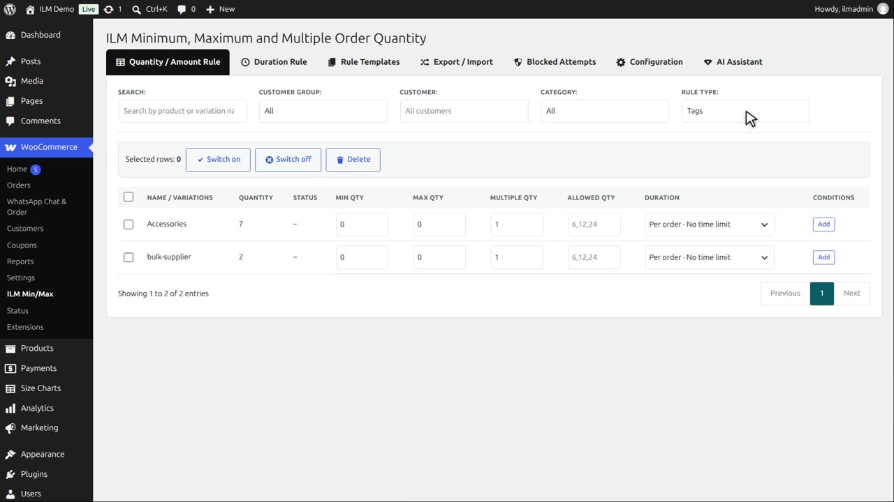
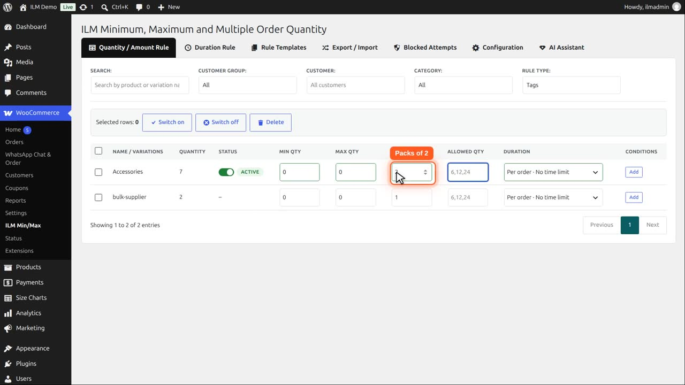
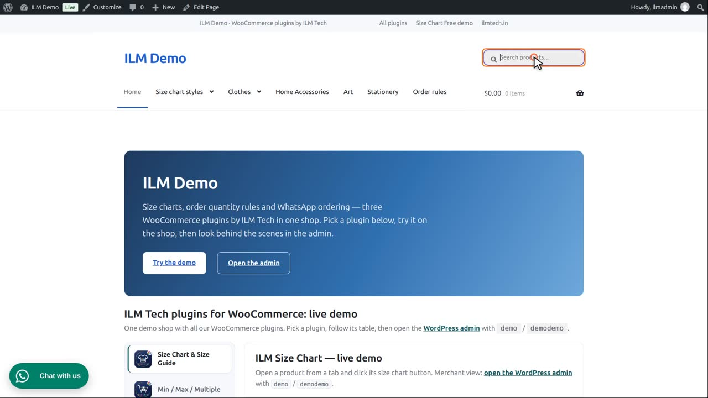
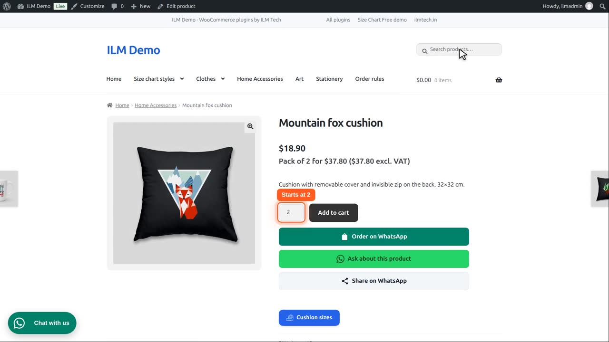

Pro add-on. This feature needs the Pro add-on. See Free and Pro.
| Level | What it does |
|---|---|
| Tag Rule | Attach a rule to every product with a tag. |
Apply Rule to Individual Products (shown for Category / Brand / Tag / User Role / Global): Enable checks the limit separately for each product under that rule; Disable pools every product under the rule into one shared total.
Set Rule Type to Tag. The table lists your product tags.

The Accessories tag is on our mugs, cushions and notebooks. Type two in Multiple Qty: they are sold in pairs.

The Tag Rule card is enabled, and Apply Rule to Individual Products is enabled: each product is sold in pairs on its own.

So the cushion starts at two, the smallest pair.

And the arrows go up a pair at a time. A tag rule is handy for products from one supplier or one product line.